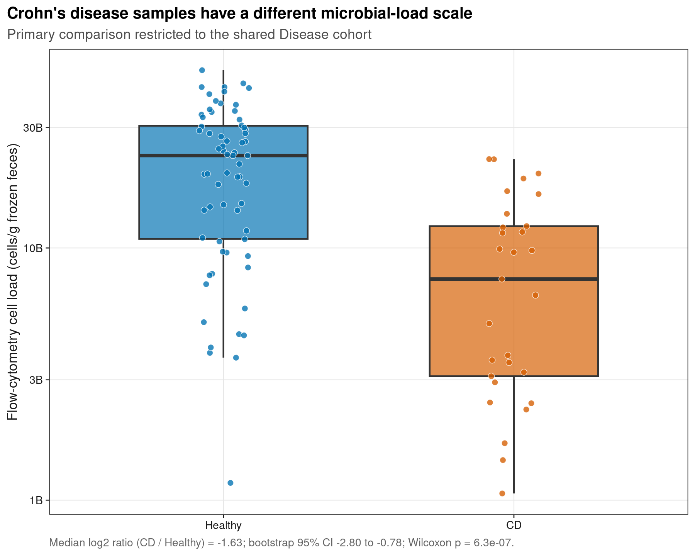
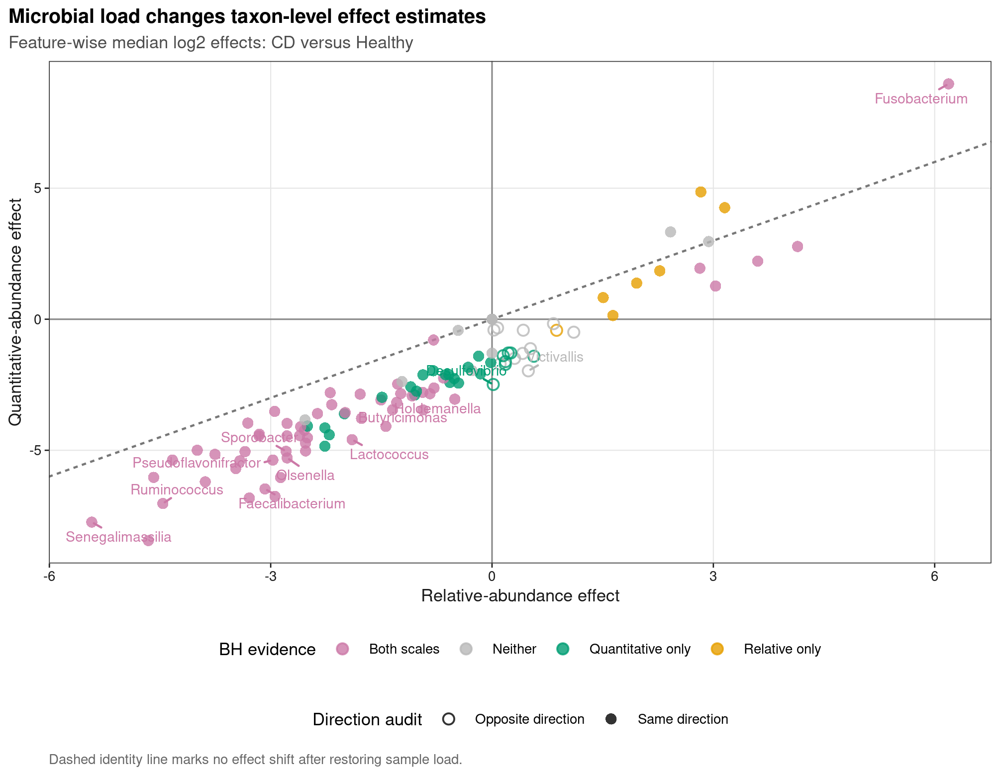
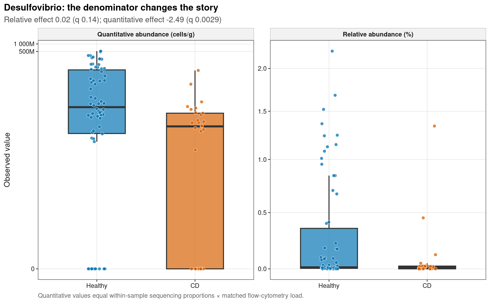

options(timeout = 600)
data_url <- "https://raw.githubusercontent.com/petemeng/microbiome-best-practices/3cb6a817e0c73ab7ecbec1cedc1ad80cbb9ecfaa/"
input_files <- c(
"data/small/absolute-quantification/cell-load.tsv",
"data/small/absolute-quantification/metadata.tsv",
"data/small/absolute-quantification/otutab.tsv",
"data/small/absolute-quantification/source-summary.json",
"data/small/absolute-quantification/taxonomy.tsv"
)
for (path in input_files) {
dir.create(dirname(path), recursive = TRUE, showWarnings = FALSE)
if (!file.exists(path)) download.file(paste0(data_url, path), path, mode = "wb", quiet = TRUE)
}绝对定量陷阱：相对丰度 vs QMP/spike-in
相对丰度不能替代微生物总负荷
Vandeputte et al. (2017)把 flow-cytometry cell counts 与 16S composition 结合，展示 microbial load 如何改变 enterotype、疾病关联和共变网络的解释。Nature 图形许可不默认允许公众号整图转载，因此这里使用论文公开数据的 Bioconductor 分发版本，从数值重绘 load distribution、relative–quantitative effect map 和一个分歧 taxon 的双尺度分布。
重要先给结论
相对丰度回答“某属占本样本测序组成的多少”，QMP 近似回答“某属每克样本有多少细胞”。若 CD 样本的总体 cell load 系统性较低，一个相对份额升高的属仍可能在绝对尺度下降。Relative 和 quantitative 不是谁替代谁：前者描述 composition，后者恢复样本间 scale；两者并列最容易识别 closure illusion。
本页数据来自 reconsi 1.16.0 随包分发的 Vandeputte phyloseq object，原始研究同时提供 genus counts 与 flow cytometry。主比较只用 Cohort == "Disease"，避免把额外 40 个 study controls 与病例队列直接混合；健康状态仍是观察性标签，不能据此推出疾病因果菌。
下载并读取本次分析的数据
需要 R，以及 ggplot2、ggrepel、knitr、ragg、scales、svglite。本次使用三张微生物组表以及实测细胞负荷表；绝对定量不能只靠相对丰度推算。
在一个新建的文件夹中运行以下代码，下载文件后按文中的顺序继续分析：
library(ggplot2)
set.seed(20260734)
font_pub <- "sans"
pal_pub <- c(
blue = "#0072B2", orange = "#E69F00", green = "#009E73",
vermillion = "#D55E00", purple = "#CC79A7", sky = "#56B4E9",
yellow = "#F0E442", grey = "#6B7280"
)
scale_color_pub <- function(..., values = unname(pal_pub)) {
ggplot2::scale_color_manual(..., values = values)
}
scale_fill_pub <- function(..., values = unname(pal_pub)) {
ggplot2::scale_fill_manual(..., values = values)
}
theme_pub <- function(base_size = 10, base_family = font_pub) {
ggplot2::theme_bw(base_size = base_size, base_family = base_family) +
ggplot2::theme(
panel.grid.minor = ggplot2::element_blank(),
panel.grid.major = ggplot2::element_line(
colour = "#E6E6E6", linewidth = 0.25
),
axis.text = ggplot2::element_text(colour = "#1A1A1A"),
axis.title = ggplot2::element_text(colour = "#1A1A1A"),
axis.ticks = ggplot2::element_line(colour = "#1A1A1A", linewidth = 0.3),
plot.title.position = "plot",
plot.title = ggplot2::element_text(
face = "bold", size = ggplot2::rel(1.15)
),
plot.subtitle = ggplot2::element_text(colour = "#4D4D4D"),
plot.caption = ggplot2::element_text(colour = "#666666", hjust = 0),
strip.background = ggplot2::element_rect(
fill = "#F2F2F2", colour = "#B3B3B3", linewidth = 0.3
),
strip.text = ggplot2::element_text(face = "bold"),
legend.key = ggplot2::element_blank(), legend.position = "top"
)
}
save_pub <- function(
plot, file_base, width = 89, height = 70, units = "mm",
dpi = 600, write_svg = TRUE, write_tiff = TRUE,
base_family = font_pub
) {
dir.create(dirname(file_base), recursive = TRUE, showWarnings = FALSE)
ggplot2::ggsave(
paste0(file_base, ".pdf"), plot, width = width, height = height,
units = units, device = grDevices::cairo_pdf,
family = base_family, bg = "white"
)
if (write_svg) ggplot2::ggsave(
paste0(file_base, ".svg"), plot, width = width, height = height,
units = units, device = svglite::svglite, bg = "white"
)
ggplot2::ggsave(
paste0(file_base, ".png"), plot, width = width, height = height,
units = units, dpi = dpi, device = ragg::agg_png, bg = "white"
)
if (write_tiff) ggplot2::ggsave(
paste0(file_base, ".tiff"), plot, width = width, height = height,
units = units, dpi = dpi, device = ragg::agg_tiff,
compression = "lzw", bg = "white"
)
invisible(plot)
}读取三件套和额外的 cell-load 表
read_keyed_tsv <- function(path) {
x <- readr::read_tsv(
path, show_col_types = FALSE, progress = FALSE,
name_repair = "minimal", na = character()
)
ids <- as.character(x[[1L]])
stopifnot(!anyDuplicated(ids))
out <- as.data.frame(x[-1L], check.names = FALSE)
rownames(out) <- ids
out
}
data_dir <- "data/small/absolute-quantification"
otutab_raw <- read_keyed_tsv(file.path(data_dir, "otutab.tsv"))
taxonomy <- read_keyed_tsv(file.path(data_dir, "taxonomy.tsv"))
metadata_all <- read_keyed_tsv(file.path(data_dir, "metadata.tsv"))
cell_load_all <- read_keyed_tsv(file.path(data_dir, "cell-load.tsv"))
source_summary <- jsonlite::read_json(file.path(data_dir, "source-summary.json"))
otutab_all <- as.matrix(data.frame(
lapply(otutab_raw, as.integer), check.names = FALSE
))
rownames(otutab_all) <- rownames(otutab_raw)
cell_load_all$AbsoluteCellLoad <- as.numeric(cell_load_all$AbsoluteCellLoad)
stopifnot(
identical(rownames(otutab_all), rownames(taxonomy)),
identical(colnames(otutab_all), rownames(metadata_all)),
identical(colnames(otutab_all), rownames(cell_load_all)),
nrow(otutab_all) == 234L,
ncol(otutab_all) == 135L,
sum(otutab_all) == 4080996L,
all(otutab_all >= 0L),
all(otutab_all == round(otutab_all)),
all(cell_load_all$AbsoluteCellLoad > 0),
identical(unique(cell_load_all$Unit), "cells per gram frozen feces"),
identical(source_summary$package$version, "1.16.0")
)
head(otutab_all[, 1:5])
head(taxonomy)
head(metadata_all)
head(cell_load_all) sa1 sa2 sa3 sa4 sa5
Abiotrophia 0 1 0 0 0
Acetanaerobacterium 0 0 0 0 0
Acetatifactor 0 0 0 0 0
Acetitomaculum 0 0 0 0 0
Acetivibrio 0 0 0 0 0
Acidaminococcus 761 279 5839 8 2784
Kingdom Phylum Class Order Family Genus
Abiotrophia NA NA NA NA NA Abiotrophia
Acetanaerobacterium NA NA NA NA NA Acetanaerobacterium
Acetatifactor NA NA NA NA NA Acetatifactor
Acetitomaculum NA NA NA NA NA Acetitomaculum
Acetivibrio NA NA NA NA NA Acetivibrio
Acidaminococcus NA NA NA NA NA Acidaminococcus
Species
Abiotrophia NA
Acetanaerobacterium NA
Acetatifactor NA
Acetitomaculum NA
Acetivibrio NA
Acidaminococcus NA
SubjectID Cohort HealthStatus
sa1 DC01 Disease CD
sa2 DC02 Disease CD
sa3 DC03 Disease CD
sa4 DC04 Disease CD
sa5 DC05 Disease CD
sa6 DC06 Disease CD
AbsoluteCellLoad Unit
sa1 1062977465 cells per gram frozen feces
sa2 12208511643 cells per gram frozen feces
sa3 1681888321 cells per gram frozen feces
sa4 6498912507 cells per gram frozen feces
sa5 3752945330 cells per gram frozen feces
sa6 2422082276 cells per gram frozen feces下载完整 R 脚本。脚本包含数据下载、计算和图形导出。
首次使用时安装 R 包
install.packages(c(
"BiocManager", "ggplot2", "ggrepel", "jsonlite", "patchwork", "ragg", "readr",
"scales", "svglite", "systemfonts"
))
BiocManager::install(version = "3.19", ask = FALSE)
BiocManager::install(c("phyloseq", "reconsi"), ask = FALSE)QMP 如何把样本总负荷带回组成数据
Relative abundance 丢失总负荷
对 taxon \(i\)、样本 \(s\)，测序比例为
\[ p_{is}=\frac{Y_{is}}{\sum_jY_{js}}. \]
所有 \(p_{is}\) 加和为 1；单凭 p 无法区分“taxon 本身减少”与“其他 taxa 增加导致份额减少”。Raw library size 也不是负荷，因为它由上机分配、测序深度和质控共同决定。
Flow-cytometry QMP 的核心换算
若独立测得样本总 microbial load \(L_s\)（cells per gram frozen feces），则
\[ \widehat A_{is}=p_{is}\times L_s. \]
\(\widehat A_{is}\)恢复了样本间总量刻度，但仍假定 sequencing proportion 可代表 cell composition。DNA extraction、PCR、primer、16S copy number 和 cell lysis bias 不会因为乘了 L_s 自动消失。
Spike-in、qPCR/ddPCR 与 flow cytometry 校准的对象不同
- Flow cytometry计数满足 gating/staining 条件的 cells，适合总细胞负荷；需要处理碎片、聚团、活死染色和样本基质。
- Universal 16S qPCR/ddPCR估计 gene copies；需要扩增效率、标准曲线/partition、抑制、含水量和 16S copy-number 解释。
- Cell/DNA spike-in用已知加入量恢复 scale；加入时点决定它能控制 extraction、PCR 和 sequencing 流程中的哪些环节。
三者的单位不是自动可互换的。Methods 必须写清 cells/g、gene copies/g、genome equivalents/g 或“相对 spike-in 的 calibrated units”。
同 cohort 比较先于统计模型
本数据有 Disease 与 Study 两个 cohort 标签。若把 29 个 CD 与全部 106 个 healthy controls直接比较，cohort 与 health status 部分重叠，protocol/collection difference 可能混入效应。因此主分析只保留 Disease cohort 中的 29 CD + 66 healthy；额外 40 个 controls 留作外部敏感性，而不是悄悄扩大样本量。
深入：为什么 QMP 仍不是“真实细胞数金标准”
换算把总负荷测量误差和 composition 测量误差相乘。某属的细胞裂解率、DNA回收率、primer mismatch、扩增效率与 rrn copy number 都可造成 taxon-specific bias；flow cytometry 又有 sample-specific gating 与染色误差。QMP 是带有可声明假设的 calibrated estimate。若研究结论依赖某个目标 taxon，还应做 taxon-specific qPCR/ddPCR、培养、FISH 或标准物质验证。
把相对组成与实测细胞负荷结合
只保留同一 Disease cohort
sample_ids <- rownames(metadata_all)[metadata_all$Cohort == "Disease"]
metadata <- metadata_all[sample_ids, , drop = FALSE]
metadata$HealthStatus <- relevel(
factor(metadata$HealthStatus), ref = "Healthy"
)
cell_load <- cell_load_all[sample_ids, , drop = FALSE]
counts <- otutab_all[, sample_ids, drop = FALSE]
stopifnot(
length(sample_ids) == 95L,
sum(metadata$HealthStatus == "CD") == 29L,
sum(metadata$HealthStatus == "Healthy") == 66L,
identical(colnames(counts), rownames(metadata)),
identical(colnames(counts), rownames(cell_load))
)
table(metadata$Cohort, metadata$HealthStatus)
summary(cell_load$AbsoluteCellLoad)
Healthy CD
Disease 66 29
Min. 1st Qu. Median Mean 3rd Qu. Max.
1.063e+09 7.662e+09 1.636e+10 1.819e+10 2.709e+10 5.071e+10 计算 QMP，并审计总负荷差异
library_size <- colSums(counts)
relative_abundance <- sweep(counts, 2L, library_size, "/")
quantitative_abundance <- sweep(
relative_abundance,
2L,
cell_load$AbsoluteCellLoad,
"*"
)
stopifnot(
max(abs(colSums(relative_abundance) - 1)) < 1e-12,
max(abs(colSums(quantitative_abundance) - cell_load$AbsoluteCellLoad)) < 1e-3
)
load_cd <- cell_load$AbsoluteCellLoad[metadata$HealthStatus == "CD"]
load_healthy <- cell_load$AbsoluteCellLoad[metadata$HealthStatus == "Healthy"]
load_wilcox <- stats::wilcox.test(load_cd, load_healthy, exact = FALSE)
load_log2_median_ratio <- log2(median(load_cd) / median(load_healthy))
set.seed(20260734)
bootstrap_replicates <- 2000L
load_bootstrap <- replicate(bootstrap_replicates, {
log2(
median(sample(load_cd, replace = TRUE)) /
median(sample(load_healthy, replace = TRUE))
)
})
load_bootstrap_ci <- stats::quantile(
load_bootstrap, probs = c(0.025, 0.975), names = FALSE
)
load_cliffs_delta <- mean(outer(load_cd, load_healthy, ">")) -
mean(outer(load_cd, load_healthy, "<"))
load_summary <- data.frame(
Contrast = "CD versus Healthy (Disease cohort)",
CDMedianCellsPerGram = median(load_cd),
HealthyMedianCellsPerGram = median(load_healthy),
Log2MedianRatio = load_log2_median_ratio,
BootstrapCI95Lower = load_bootstrap_ci[[1L]],
BootstrapCI95Upper = load_bootstrap_ci[[2L]],
CliffsDelta = load_cliffs_delta,
WilcoxonP = load_wilcox$p.value,
stringsAsFactors = FALSE
)
load_summary Contrast CDMedianCellsPerGram
1 CD versus Healthy (Disease cohort) 7532913895
HealthyMedianCellsPerGram Log2MedianRatio BootstrapCI95Lower
1 23252794061 -1.626124 -2.795712
BootstrapCI95Upper CliffsDelta WilcoxonP
1 -0.7820855 -0.6447231 6.288046e-07在相对与定量尺度分别做同一 feature screen
prevalence <- rowMeans(counts > 0)
eligible <- prevalence >= 0.10 & rowSums(counts) >= 20
feature_ids <- rownames(counts)[eligible]
group <- metadata$HealthStatus
safe_log2_median_effect <- function(x, group) {
positive <- x[x > 0 & is.finite(x)]
pseudocount <- if (length(positive)) min(positive) / 2 else 0.5
median(log2(x[group == "CD"] + pseudocount)) -
median(log2(x[group == "Healthy"] + pseudocount))
}
safe_wilcox <- function(x, group) {
if (length(unique(x)) < 2L) return(1)
stats::wilcox.test(
x[group == "CD"], x[group == "Healthy"], exact = FALSE
)$p.value
}
relative_effect <- vapply(feature_ids, function(id) {
safe_log2_median_effect(relative_abundance[id, ], group)
}, numeric(1))
quantitative_effect <- vapply(feature_ids, function(id) {
safe_log2_median_effect(quantitative_abundance[id, ], group)
}, numeric(1))
relative_p <- vapply(feature_ids, function(id) {
safe_wilcox(relative_abundance[id, ], group)
}, numeric(1))
quantitative_p <- vapply(feature_ids, function(id) {
safe_wilcox(quantitative_abundance[id, ], group)
}, numeric(1))
scale_comparison <- data.frame(
FeatureID = feature_ids,
Genus = taxonomy[feature_ids, "Genus"],
Prevalence = prevalence[feature_ids],
RelativeEffect = relative_effect,
QuantitativeEffect = quantitative_effect,
RelativeP = relative_p,
QuantitativeP = quantitative_p,
stringsAsFactors = FALSE
)
scale_comparison$ReportableGenus <- !grepl(
"unclassified|unknown|unassigned|uncultured|metagenome|^other$",
scale_comparison$Genus,
ignore.case = TRUE
) & nzchar(trimws(scale_comparison$Genus))
scale_comparison$RelativeQ <- stats::p.adjust(scale_comparison$RelativeP, method = "BH")
scale_comparison$QuantitativeQ <- stats::p.adjust(
scale_comparison$QuantitativeP, method = "BH"
)
scale_comparison$DirectionConcordant <- sign(scale_comparison$RelativeEffect) ==
sign(scale_comparison$QuantitativeEffect)
scale_comparison$EvidenceClass <- with(
scale_comparison,
ifelse(
RelativeQ < 0.05 & QuantitativeQ < 0.05, "Both scales",
ifelse(
RelativeQ < 0.05, "Relative only",
ifelse(QuantitativeQ < 0.05, "Quantitative only", "Neither")
)
)
)
scale_comparison$EffectShift <- scale_comparison$QuantitativeEffect -
scale_comparison$RelativeEffect
scale_comparison <- scale_comparison[order(
-abs(scale_comparison$EffectShift),
pmin(scale_comparison$RelativeQ, scale_comparison$QuantitativeQ)
), ]
stopifnot(
nrow(scale_comparison) >= 50L,
all(is.finite(scale_comparison$RelativeEffect)),
all(is.finite(scale_comparison$QuantitativeEffect)),
all(scale_comparison$RelativeQ >= 0 & scale_comparison$RelativeQ <= 1),
all(scale_comparison$QuantitativeQ >= 0 & scale_comparison$QuantitativeQ <= 1),
sum(scale_comparison$ReportableGenus) >= 20L
)
table(scale_comparison$EvidenceClass)
table(scale_comparison$DirectionConcordant)
head(scale_comparison, 15)
Both scales Neither Quantitative only Relative only
74 52 32 7
FALSE TRUE
18 147
FeatureID
unclassified_Sphingobacteriaceae unclassified_Sphingobacteriaceae
unclassified_Peptococcaceae unclassified_Peptococcaceae
unclassified_Thermoactinomycetaceae unclassified_Thermoactinomycetaceae
Faecalibacterium Faecalibacterium
unclassified_Oxalobacteraceae unclassified_Oxalobacteraceae
Fusobacterium Fusobacterium
Lactococcus Lactococcus
Butyricimonas Butyricimonas
unclassified_Candidatus unclassified_Candidatus
Ruminococcus Ruminococcus
Holdemanella Holdemanella
unclassified_Puniceicoccaceae unclassified_Puniceicoccaceae
Olsenella Olsenella
Desulfovibrio Desulfovibrio
unclassified_Christensenellaceae unclassified_Christensenellaceae
Genus
unclassified_Sphingobacteriaceae unclassified_Sphingobacteriaceae
unclassified_Peptococcaceae unclassified_Peptococcaceae
unclassified_Thermoactinomycetaceae unclassified_Thermoactinomycetaceae
Faecalibacterium Faecalibacterium
unclassified_Oxalobacteraceae unclassified_Oxalobacteraceae
Fusobacterium Fusobacterium
Lactococcus Lactococcus
Butyricimonas Butyricimonas
unclassified_Candidatus unclassified_Candidatus
Ruminococcus Ruminococcus
Holdemanella Holdemanella
unclassified_Puniceicoccaceae unclassified_Puniceicoccaceae
Olsenella Olsenella
Desulfovibrio Desulfovibrio
unclassified_Christensenellaceae unclassified_Christensenellaceae
Prevalence RelativeEffect
unclassified_Sphingobacteriaceae 0.5157895 -2.94140166
unclassified_Peptococcaceae 0.6736842 -4.65754377
unclassified_Thermoactinomycetaceae 0.5473684 -3.28942325
Faecalibacterium 1.0000000 -3.07711487
unclassified_Oxalobacteraceae 0.4526316 -2.86620007
Fusobacterium 0.6105263 6.18833116
Lactococcus 0.4947368 -1.89634179
Butyricimonas 0.9578947 -1.43870268
unclassified_Candidatus 0.5789474 -2.26573155
Ruminococcus 1.0000000 -4.46236280
Holdemanella 0.8842105 -0.50417753
unclassified_Puniceicoccaceae 0.7052632 -0.93462724
Olsenella 0.6000000 -2.77641708
Desulfovibrio 0.7578947 0.01630315
unclassified_Christensenellaceae 0.9052632 -2.52657473
QuantitativeEffect RelativeP
unclassified_Sphingobacteriaceae -6.757952 1.065173e-04
unclassified_Peptococcaceae -8.444960 3.028250e-08
unclassified_Thermoactinomycetaceae -6.821058 5.446553e-07
Faecalibacterium -6.475140 1.975879e-06
unclassified_Oxalobacteraceae -6.037949 4.217973e-06
Fusobacterium 8.980823 6.092598e-15
Lactococcus -4.593453 3.378383e-03
Butyricimonas -4.087105 1.713040e-04
unclassified_Candidatus -4.846050 1.142553e-01
Ruminococcus -7.031062 2.402784e-08
Holdemanella -3.049816 1.963413e-02
unclassified_Puniceicoccaceae -3.460795 3.249188e-03
Olsenella -5.292406 1.058866e-02
Desulfovibrio -2.490148 8.370508e-02
unclassified_Christensenellaceae -5.025302 1.112528e-05
QuantitativeP ReportableGenus RelativeQ
unclassified_Sphingobacteriaceae 1.809137e-05 FALSE 5.021531e-04
unclassified_Peptococcaceae 4.612380e-09 FALSE 5.551791e-07
unclassified_Thermoactinomycetaceae 1.939868e-07 FALSE 5.991208e-06
Faecalibacterium 3.321150e-08 TRUE 1.630100e-05
unclassified_Oxalobacteraceae 2.996657e-06 FALSE 2.783862e-05
Fusobacterium 3.194009e-12 TRUE 1.005279e-12
Lactococcus 7.445266e-04 TRUE 1.013515e-02
Butyricimonas 1.346140e-06 TRUE 7.438201e-04
unclassified_Candidatus 1.091384e-02 FALSE 1.761880e-01
Ruminococcus 1.872644e-09 TRUE 4.955743e-07
Holdemanella 8.824994e-06 TRUE 4.207313e-02
unclassified_Puniceicoccaceae 1.458498e-05 FALSE 9.928074e-03
Olsenella 6.544456e-04 TRUE 2.569307e-02
Desulfovibrio 1.215002e-03 TRUE 1.396147e-01
unclassified_Christensenellaceae 1.965879e-07 FALSE 6.555968e-05
QuantitativeQ DirectionConcordant
unclassified_Sphingobacteriaceae 7.109696e-05 TRUE
unclassified_Peptococcaceae 6.342023e-08 TRUE
unclassified_Thermoactinomycetaceae 1.351542e-06 TRUE
Faecalibacterium 3.223469e-07 TRUE
unclassified_Oxalobacteraceae 1.498329e-05 TRUE
Fusobacterium 5.270115e-10 TRUE
Lactococcus 1.889952e-03 TRUE
Butyricimonas 7.659071e-06 TRUE
unclassified_Candidatus 1.942581e-02 TRUE
Ruminococcus 3.433181e-08 TRUE
Holdemanella 3.935471e-05 TRUE
unclassified_Puniceicoccaceae 6.016303e-05 TRUE
Olsenella 1.741670e-03 TRUE
Desulfovibrio 2.948167e-03 FALSE
unclassified_Christensenellaceae 1.351542e-06 TRUE
EvidenceClass EffectShift
unclassified_Sphingobacteriaceae Both scales -3.816550
unclassified_Peptococcaceae Both scales -3.787416
unclassified_Thermoactinomycetaceae Both scales -3.531634
Faecalibacterium Both scales -3.398025
unclassified_Oxalobacteraceae Both scales -3.171749
Fusobacterium Both scales 2.792492
Lactococcus Both scales -2.697111
Butyricimonas Both scales -2.648402
unclassified_Candidatus Quantitative only -2.580318
Ruminococcus Both scales -2.568700
Holdemanella Both scales -2.545638
unclassified_Puniceicoccaceae Both scales -2.526168
Olsenella Both scales -2.515989
Desulfovibrio Quantitative only -2.506451
unclassified_Christensenellaceae Both scales -2.498727这些 Wilcoxon + BH 结果用于比较测量尺度，不取代复杂队列的协变量 DA 模型。真正的病例–对照研究应在相对/定量两个 endpoint 上使用同一协变量、batch 和 subject contract。
自动选择一个尺度分歧最大的可解释属
exemplar_pool <- scale_comparison[
scale_comparison$ReportableGenus & (
scale_comparison$RelativeQ < 0.05 |
scale_comparison$QuantitativeQ < 0.05
),
]
stopifnot(nrow(exemplar_pool) > 0L)
exemplar_pool$SelectionPriority <- ifelse(
!exemplar_pool$DirectionConcordant,
2L,
ifelse(exemplar_pool$EvidenceClass != "Both scales", 1L, 0L)
)
exemplar_pool <- exemplar_pool[order(
-exemplar_pool$SelectionPriority,
-abs(exemplar_pool$EffectShift),
exemplar_pool$Genus
), ]
exemplar <- exemplar_pool[1L, ]
exemplar_id <- exemplar$FeatureID[[1L]]
exemplar_genus <- exemplar$Genus[[1L]]
exemplar_long <- rbind(
data.frame(
SampleID = sample_ids,
HealthStatus = metadata$HealthStatus,
Scale = "Relative abundance (%)",
Value = 100 * relative_abundance[exemplar_id, ],
stringsAsFactors = FALSE
),
data.frame(
SampleID = sample_ids,
HealthStatus = metadata$HealthStatus,
Scale = "Quantitative abundance (cells/g)",
Value = quantitative_abundance[exemplar_id, ],
stringsAsFactors = FALSE
)
)
exemplar FeatureID Genus Prevalence RelativeEffect
Desulfovibrio Desulfovibrio Desulfovibrio 0.7578947 0.01630315
QuantitativeEffect RelativeP QuantitativeP ReportableGenus
Desulfovibrio -2.490148 0.08370508 0.001215002 TRUE
RelativeQ QuantitativeQ DirectionConcordant EvidenceClass
Desulfovibrio 0.1396147 0.002948167 FALSE Quantitative only
EffectShift SelectionPriority
Desulfovibrio -2.506451 2示例选择规则先找方向相反的可报告属，再找只在一个尺度通过 BH 的属，最后才按 effect shift 大小排序；规则在看名字前固定，避免挑选更好讲故事的菌。
QMP 与 spike-in 仍需哪些校准？
absolute_audit <- data.frame(
Dimension = c(
"Sample denominator", "Load measurement", "QMP formula",
"Cohort", "Taxon bias", "Claim"
),
FragilePractice = c(
"Use reads as cells",
"Omit units and calibration",
"Multiply after unrelated normalization",
"Mix controls from different cohorts",
"Assume QMP removes every bias",
"Call association an absolute causal change"
),
UpgradedContract = c(
"Use sample mass/volume and an independent scale",
"Report platform, gating/curve, QC and units",
"Multiply within-sample proportions by matched load",
"Primary analysis within a shared collection cohort",
"Retain extraction/PCR/copy-number limitations",
"Report calibrated association plus orthogonal validation"
),
stringsAsFactors = FALSE
)
knitr::kable(absolute_audit, caption = "Quantitative microbiome profiling audit")| Dimension | FragilePractice | UpgradedContract |
|---|---|---|
| Sample denominator | Use reads as cells | Use sample mass/volume and an independent scale |
| Load measurement | Omit units and calibration | Report platform, gating/curve, QC and units |
| QMP formula | Multiply after unrelated normalization | Multiply within-sample proportions by matched load |
| Cohort | Mix controls from different cohorts | Primary analysis within a shared collection cohort |
| Taxon bias | Assume QMP removes every bias | Retain extraction/PCR/copy-number limitations |
| Claim | Call association an absolute causal change | Report calibrated association plus orthogonal validation |
Vandeputte 的工作流把总细胞负荷带回 composition，是对 relative profiling 的关键升级；它并不授权把每个 QMP 数值当作无误差真值。最低报告集应包含：原始 counts、relative table、load table、QMP table、sample mass/unit、load QC、换算公式、zero policy、cohort design、相对/定量结果对照和 target-specific validation。
Spike-in 的升级点是“何时加入”。Extraction 前加入的 intact-cell spike可追踪更多处理步骤；PCR 前 DNA spike不控制 lysis/extraction；上机前 library spike控制的范围更窄。选择要由 estimand 与误差来源决定，不能只看哪种最方便。
比较相对变化和定量变化的方向
图 1：先画独立测得的 microbial load
load_plot_data <- data.frame(
SampleID = sample_ids,
HealthStatus = metadata$HealthStatus,
CellLoad = cell_load$AbsoluteCellLoad,
stringsAsFactors = FALSE
)
load_plot <- ggplot(
load_plot_data,
aes(x = HealthStatus, y = CellLoad, fill = HealthStatus)
) +
geom_boxplot(width = 0.58, outlier.shape = NA, alpha = 0.68) +
geom_point(
position = position_jitter(width = 0.09, height = 0, seed = 20260734),
shape = 21, colour = "white", stroke = 0.25,
size = 1.65, alpha = 0.78
) +
scale_y_log10(labels = scales::label_number(scale_cut = scales::cut_short_scale())) +
scale_fill_manual(values = c(
Healthy = pal_pub[["blue"]], CD = pal_pub[["vermillion"]]
)) +
labs(
title = "Crohn's disease samples have a different microbial-load scale",
subtitle = "Primary comparison restricted to the shared Disease cohort",
x = NULL, y = "Flow-cytometry cell load (cells/g frozen feces)",
fill = "Health status",
caption = sprintf(
"Median log2 ratio (CD / Healthy) = %.2f; bootstrap 95%% CI %.2f to %.2f; Wilcoxon p = %.2g.",
load_log2_median_ratio, load_bootstrap_ci[[1L]],
load_bootstrap_ci[[2L]], load_wilcox$p.value
)
) +
theme_pub(base_size = 8.5) +
theme(legend.position = "none")
save_pub(load_plot, "figures/34-microbial-load", width = 152, height = 122)
load_plot
图 2：同一属的相对丰度与定量变化方向可能不同
effect_plot_data <- scale_comparison
label_data <- head(
effect_plot_data[effect_plot_data$ReportableGenus, ],
12L
)
effect_plot <- ggplot(
effect_plot_data,
aes(
x = RelativeEffect, y = QuantitativeEffect,
colour = EvidenceClass, shape = DirectionConcordant
)
) +
geom_hline(yintercept = 0, colour = "#888888", linewidth = 0.35) +
geom_vline(xintercept = 0, colour = "#888888", linewidth = 0.35) +
geom_abline(slope = 1, intercept = 0, linetype = "22", colour = "#777777") +
geom_point(size = 2.1, alpha = 0.80, stroke = 0.65) +
ggrepel::geom_text_repel(
data = label_data, aes(label = Genus),
family = font_pub, size = 2.4, min.segment.length = 0,
max.overlaps = Inf, show.legend = FALSE
) +
scale_colour_manual(values = c(
"Both scales" = pal_pub[["purple"]],
"Relative only" = pal_pub[["orange"]],
"Quantitative only" = pal_pub[["green"]],
"Neither" = "#B8B8B8"
)) +
scale_shape_manual(
values = c(`TRUE` = 16, `FALSE` = 1),
labels = c(`TRUE` = "Same direction", `FALSE` = "Opposite direction")
) +
labs(
title = "Microbial load changes taxon-level effect estimates",
subtitle = "Feature-wise median log2 effects: CD versus Healthy",
x = "Relative-abundance effect",
y = "Quantitative-abundance effect",
colour = "BH evidence", shape = "Direction audit",
caption = "Dashed identity line marks no effect shift after restoring sample load."
) +
theme_pub(base_size = 8.3) +
theme(legend.position = "bottom", legend.box = "vertical")
save_pub(
effect_plot, "figures/34-relative-quantitative-effects",
width = 170, height = 132
)
effect_plot
图 3：把一个分歧属的两种纵轴并排
exemplar_plot <- ggplot(
exemplar_long,
aes(x = HealthStatus, y = Value, fill = HealthStatus)
) +
geom_boxplot(width = 0.58, outlier.shape = NA, alpha = 0.68) +
geom_point(
position = position_jitter(width = 0.09, height = 0, seed = 20260734),
shape = 21, colour = "white", stroke = 0.25,
size = 1.45, alpha = 0.75
) +
facet_wrap(~Scale, scales = "free_y", nrow = 1L) +
scale_y_continuous(
trans = scales::pseudo_log_trans(base = 10),
labels = scales::label_number(scale_cut = scales::cut_short_scale())
) +
scale_fill_manual(values = c(
Healthy = pal_pub[["blue"]], CD = pal_pub[["vermillion"]]
)) +
labs(
title = paste0(exemplar_genus, ": the denominator changes the story"),
subtitle = sprintf(
"Relative effect %.2f (q %.2g); quantitative effect %.2f (q %.2g)",
exemplar$RelativeEffect, exemplar$RelativeQ,
exemplar$QuantitativeEffect, exemplar$QuantitativeQ
),
x = NULL, y = "Observed value", fill = "Health status",
caption = "Quantitative values equal within-sample sequencing proportions × matched flow-cytometry load."
) +
theme_pub(base_size = 8.2) +
theme(legend.position = "none")
save_pub(exemplar_plot, "figures/34-qmp-exemplar", width = 180, height = 112)
exemplar_plot
expected_bases <- c(
"figures/34-microbial-load",
"figures/34-relative-quantitative-effects",
"figures/34-qmp-exemplar"
)
expected_files <- as.vector(outer(
expected_bases, c(".pdf", ".svg", ".png", ".tiff"), paste0
))
stopifnot(
all(file.exists(expected_files)),
bootstrap_replicates == 2000L,
load_log2_median_ratio < 0,
nrow(exemplar) == 1L,
exemplar_id %in% rownames(counts),
any(!scale_comparison$DirectionConcordant)
)常见坑
注意坑 1：用 library size 当 microbial load
Reads per sample由上机和质控决定，不是 cells/g。绝对刻度必须来自独立校准或已知 spike-in。
注意坑 2：只写 absolute abundance，不写单位
Cells/g、16S copies/g、genome equivalents/g 与 spike-in calibrated units 不是一回事。图轴、表头和 Methods 都写完整单位。
注意坑 3：load 与 sequencing 不是同一份 aliquot/样本
QMP 要求每个 composition 与匹配的 load 一一对应。记录 sample ID、质量/体积、冻存/含水量、取样 aliquot 和丢失值。
注意坑 4：把外部 healthy cohort 全混进主比较
Collection/protocol 与 health status 可混杂。先在共同 cohort 内比较，再把额外 cohort 用作敏感性或外部验证。
注意坑 5：认为 QMP 消除了 primer 与 copy-number bias
QMP恢复 sample scale，不自动校正 taxon-specific measurement bias。关键 taxon 仍需 orthogonal assay。
注意坑 6：Spike-in 加得太晚却声称控制 extraction
明确加入时点。PCR后加入的标准不可能监控 cell lysis 或 DNA extraction recovery。
注意坑 7：只报一套相对或定量结果
并列表、方向分歧、显著性分歧和 total-load effect。二者回答不同问题，删掉一套会隐藏 closure 或 scale 信息。
注意坑 8：把病例关联写成疾病导致菌下降
观察性病例–对照数据还受药物、炎症、饮食、排便、年龄和 batch 影响。绝对单位提高测量解释力，不自动提高因果等级。
报告微生物负荷与定量组成的方法与限制
Quantitative microbiome profiles were generated from the Vandeputte genus-count dataset distributed with reconsi 1.16.0 and matched flow-cytometry microbial loads. The primary comparison was restricted to the shared Disease cohort (29 Crohn’s disease and 66 healthy samples), excluding 40 healthy samples from the separate Study cohort. For each sample, genus-level sequencing proportions were calculated by total-sum scaling the raw count table and multiplied by the matched flow-cytometry estimate in cells per gram of frozen feces. Thus, quantitative abundance for genus i in sample s was estimated as p_is × L_s, where p_is is the sequencing proportion and L_s is the independently measured microbial load. Total-load differences were summarized by the CD/healthy median ratio, a Wilcoxon rank-sum test, Cliff’s delta, and a 2,000-replicate percentile bootstrap confidence interval using seed 20260734. Taxa present in at least 10% of the 95 samples and represented by at least 20 reads were screened on both relative and quantitative scales using the same Wilcoxon test and separate within-scale Benjamini–Hochberg corrections. Unclassified source bins were retained in the tested denominator but were ineligible for highlighted labels or exemplar selection. Feature-wise effects were differences in median log2 abundance after adding half the smallest observed positive value for that feature and scale. Relative and quantitative estimates were interpreted as complementary measurements; quantitative profiles were not assumed to remove taxon-specific extraction, primer, PCR, or 16S-copy-number bias.
替换 load platform、单位、sample mass、gating/standard curve、spike-in identity/amount/加入时点、missing-data rule、协变量模型和 technical replicate 处理。若研究用 wet-weight，要说明含水量是否校正。
将微生物负荷与定量组成用于自己的研究
三件套之外还必须有一张 matched scale 表
otutab_raw <- read_keyed_tsv("your_data/otutab.tsv")
taxonomy <- read_keyed_tsv("your_data/taxonomy.tsv")
metadata_all <- read_keyed_tsv("your_data/metadata.tsv")
cell_load_all <- read_keyed_tsv("your_data/cell-load.tsv")
stopifnot(identical(
colnames(otutab_raw[-1L]), rownames(cell_load_all)
))cell-load.tsv至少包含 SampleID、数值、unit、measurement batch、QC status；qPCR还要有 efficiency/curve 或 ddPCR partition QC，spike-in 还要有加入量、加入时点与回收率。
taxonomy 单列时先拆七列
rank_names <- c(
"Kingdom", "Phylum", "Class", "Order", "Family", "Genus", "Species"
)
parts <- strsplit(taxonomy_raw$Taxon, ";", fixed = TRUE)
taxonomy_matrix <- t(vapply(parts, function(x) {
x <- trimws(x); length(x) <- 7L; x
}, character(7L)))
taxonomy <- as.data.frame(taxonomy_matrix, stringsAsFactors = FALSE)
names(taxonomy) <- rank_names
rownames(taxonomy) <- taxonomy_raw$FeatureID根据测量方式改公式，不要只改变量名
- Total-load QMP：
taxon proportion × total cells/g； - Universal 16S：
taxon proportion × total 16S copies/g； - Spike-in ratio：按已知 spike量、spike reads、sample mass 和 recovery contract 推导；
- Taxon-specific assay：直接用标准曲线/ddPCR结果，不需先按全群落比例分配。
至少用 mock community、serial dilution、technical replicate 和一个 orthogonal method 检查 linearity、limit of detection、recovery 与 batch drift。
参考
- Vandeputte D, Kathagen G, D’hoe K, et al. Quantitative microbiome profiling links gut community variation to microbial load. Nature. 2017;551:507–511. doi:10.1038/nature24460.
- Props R, Kerckhof FM, Rubbens P, et al. Absolute quantification of microbial taxon abundances. The ISME Journal. 2017;11:584–587. doi:10.1038/ismej.2016.117.
- Tourlousse DM, Yoshiike S, Ohashi A, et al. Synthetic spike-in standards for high-throughput 16S rRNA gene amplicon sequencing. Nucleic Acids Research. 2017;45(4):e23. doi:10.1093/nar/gkw984.
- Willis AD. Rarefaction, alpha diversity, and statistics. Frontiers in Microbiology. 2019;10:2407. doi:10.3389/fmicb.2019.02407.
- Brill B, Amir A, Heller R. Testing for differential abundance in compositional counts data, with application to microbiome studies. Annals of Applied Statistics. 2022;16(4):2648–2671. doi:10.1214/22-AOAS1607.
- Brill B, Heller R, Amir A. reconsi: differential abundance testing using reference frames. Bioconductor package manual.